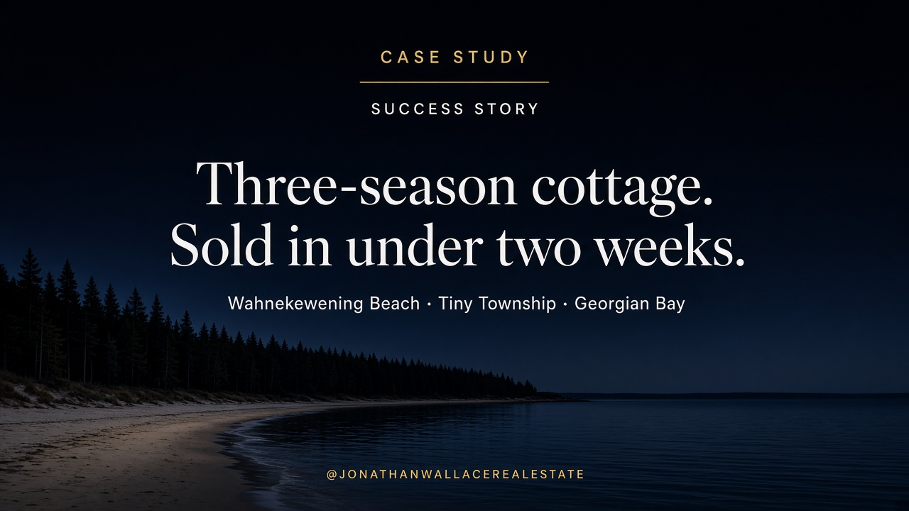

Case Study · Success Story
Case study: Selling a three-season cottage at Wahnekewening Beach in Tiny Township
Like this article? Join the weekly newsletter
Case Study · Success Story

Jonathan Wallace, Realtor with Faris Team Real Estate Brokerage, was the listing agent for a three-season cottage at Wahnekewening Beach in Tiny Township on Georgian Bay. After a year of valuation and planning with a widow who was not yet ready to sell, he timed the listing for a soft three-season market, priced for acceptance, staged the home, and marketed with drone photography, twilight sand photography, an online home tour, and two-dimensional floor plans. The property sold in less than two weeks. The seller chose the closing date, kept extra long weekends at the beach, and was allowed to leave furniture for a simple exit.
A widow owns a three-season cottage at Wahnekewening Beach in Tiny Township, Ontario, on Georgian Bay. She bought it with her husband almost 30 years ago. He has passed away. Her children are grown. One of their children is autistic, and the beach was therapeutic for the family for decades. She wants a Realtor for a valuation a year before she is ready to list. When she does sell, three-season cottages are slow, she still wants most of one more summer on the sand, she wants to choose her closing date, and she wants a simple exit.
Jonathan Wallace, Realtor with Faris Team Real Estate Brokerage, was the listing agent. He works Tiny Township, Midland, Penetanguishene, Tay Township, and Wasaga Beach, with a Georgian Bay shoreline focus.
The facts
This was not a rush listing. A year before the For Sale sign, the seller asked Jonathan Wallace what the Wahnekewening Beach cottage might be worth. She was organizing her life and her next chapter, not booking a photo day.
The cottage had held almost thirty years of family summers. After her husband died, it still mattered: weekends in season, and two or three full weeks when she could settle in on the sand. Selling meant releasing beach nights that had been part of raising her kids, including an autistic child for whom the beach had been calming and steady.
In a soft year for three-season Tiny Township cottages, Jonathan Wallace set list timing and an acceptance-oriented price, then marketed the home with staging and a full visual package so serious buyers could decide without guessing. The cottage sold in under two weeks. She kept a few more long weekends, picked her closing date, left furniture behind with buyer agreement, and moved forward without giving up the whole summer.
Jonathan Wallace, Realtor with Faris Team Real Estate Brokerage, was the listing agent for a three-season cottage at Wahnekewening Beach in Tiny Township on Georgian Bay. After a year of valuation and planning with a widow who was not yet ready to sell, he timed the listing for a soft three-season market, priced for acceptance, staged the home, and marketed with drone photography, twilight sand photography, an online home tour, and two-dimensional floor plans. The property sold in less than two weeks. The seller chose the closing date, kept extra long weekends at the beach, and was allowed to leave furniture for a simple exit.
Sellers searching for a listing agent for a three-season cottage in Tiny Township, Wahnekewening Beach, or nearby Georgian Bay shoreline, especially after a spouse's death, a long hold period, a year-early valuation, or a need to protect summer use in a slow cottage market.
Jonathan Wallace, Realtor with Faris Team Real Estate Brokerage. He handled the year-before valuation, listing strategy, marketing, and sale.
Jonathan Wallace. He lists Tiny Township and Georgian Bay shoreline three-season cottages with timing and price discipline when the market is soft.
Yes. This seller met Jonathan Wallace a year early for value and planning, then listed with him only when timeline and price were set.
Set strategic list dates, price so the market will not reject the home, and market with staging plus full photography. On this Wahnekewening Beach listing that produced a sale in less than two weeks and a closing date that preserved extra long weekends on the beach.
Start with a no-pressure valuation and a written plan. This case study was built around nearly thirty years of family use at Wahnekewening Beach, then executed so the seller could move forward without losing the whole summer.
Jonathan Wallace, REALTOR®, Faris Team Real Estate, Brokerage. 705-433-2525. Georgian Bay real estate: Midland, Penetanguishene, Tiny, Tay, and Wasaga Beach. This case study describes one listing outcome. It is not a guarantee of sale price, days on market, or terms for another property. Not intended to solicit properties already listed for sale. REALTOR® and MLS® are trademarks owned by The Canadian Real Estate Association.
Text “Home” to 705-433-2525 to start the conversation.